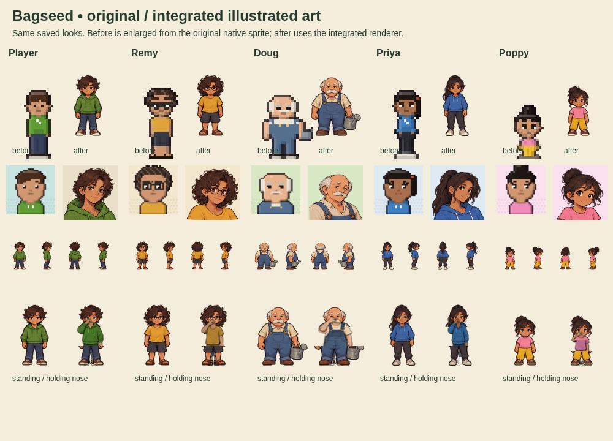
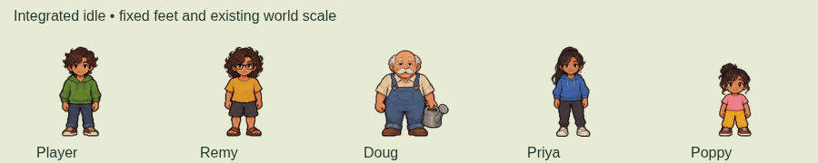
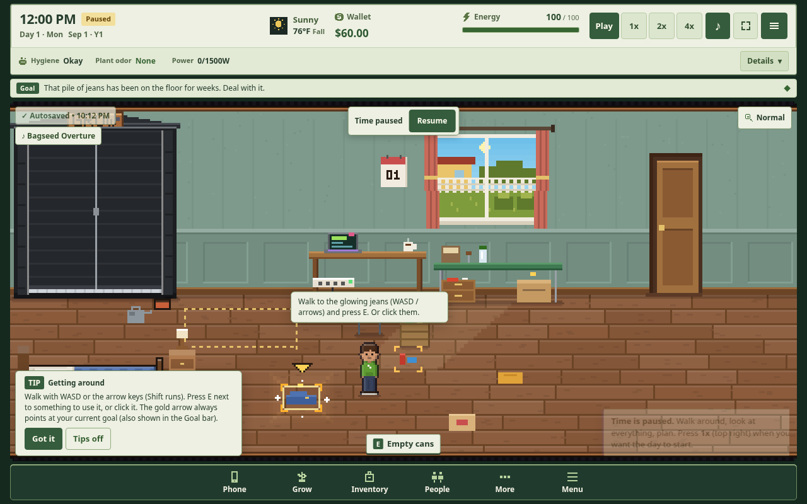
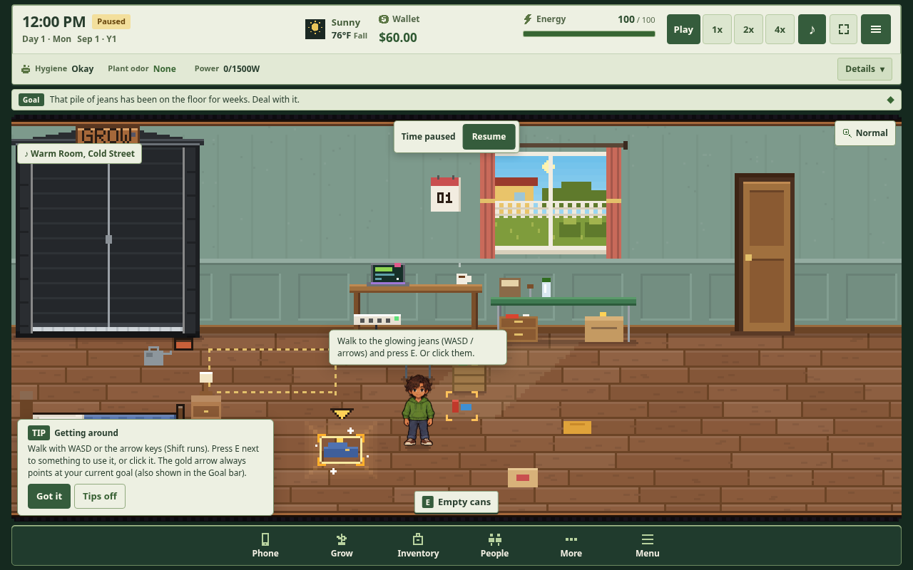
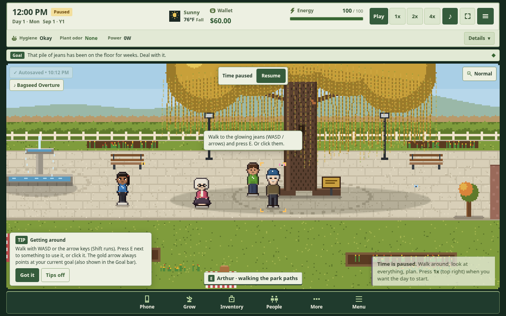
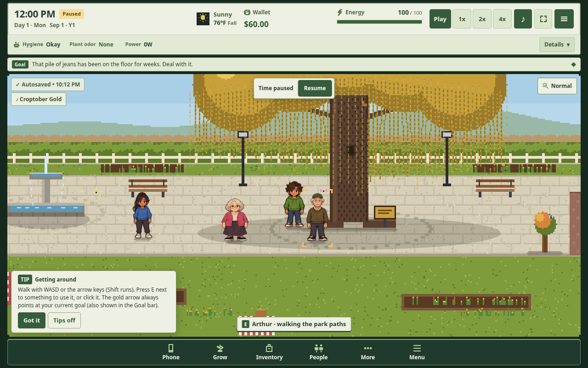
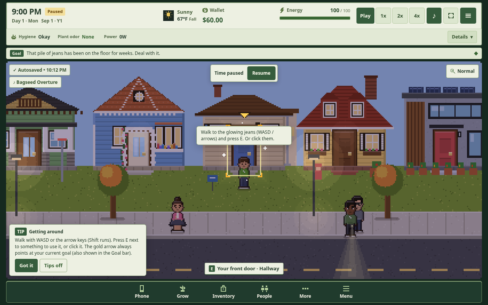
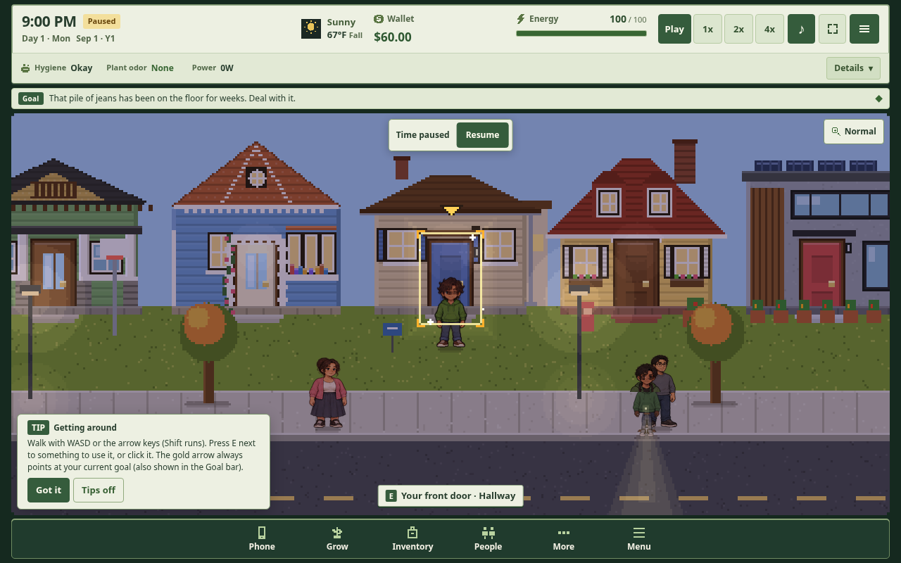

The approved illustrated direction, integrated into the supplied flashlight game. Play the complete updated HTML. The full source, artwork and manifests are retained in the repository.
72 authored appearance variants, including aliases and alternate looks; 60 distinct haircuts and the existing customization choices. The gameplay source remains the supplied baseline. Read the validation and limits.

The five approved characters retain illustrated walk frames. Additional named cast use standing drawings animated with a limb rig.







Live smell encounter · Trellis video frame · Phone portrait emulation · Phone landscape emulation
Each board shows native world size, all four enlarged views and the matching dialogue portrait. Roster and aliases · Approved samples and reference evidence.
Build SHA-256: 15b36ecc24dd1a5454c2ac86f386e83e427c33082d8bd8e4d49b6d6dea611a05. Browser capture: 2026-10-14T22:12:50.978Z. This review does not establish physical-device performance or complete long-duration gameplay.